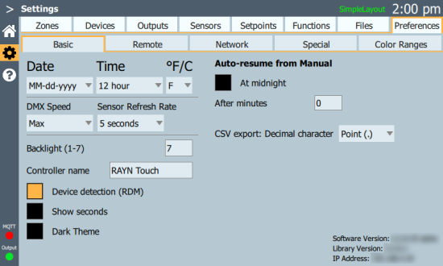

Preferences > Basic

The currently-installed software and library versions can be found in the bottom right, along with the current IP address of RAYN Touch or RAYN Syrcadia on PC.
Date & Time
Note: RAYN Syrcadia on PC will use the time, date, and network IP and subnet settings from Windows. The settings in Preferences will only alter the time and date formats used within Syrcadia.
Date and time settings include the format and the actual date and time. Time settings must be made before real time day plans can be run properly. The date setting is used in file management to date stamp config files and sensor logs.
Note: USA dates follow the format month-day-year, while European dates are formatted day-month-year. Be sure to note the format you have chosen when observing the displayed date.
- Select the date format cell to change the date format. The cell will display the currently set format.
- Select the Set button beneath the date format to set the current date.
- Select the time format cell to change the time from 12 hour to 24 hour format. The cell will display the currently set format.
- Select the Set button beneath the time format to set the current time.
°F/C
This setting determines whether temperature sensor data is displayed in degrees Fahrenheit or Celsius. Defaults to Fahrenheit.
DMX Speed
Some third-party DMX devices occasionally do not accept a full-speed DMX signal. This may result in flickering or other misbehavior. This setting can be used to slow it down to a suitable speed.
Note: When using only devices made by RAYN Growing Systems, DMX Speed should be set to Max.
Sensor Refresh Rate
To set the rate at which RAYN Syrcadia refreshes sensor data, choose 5 seconds, 1 minute, or 20 minutes from the menu.
Backlight
The screen backlight can be set from 1 (dim) to 7 (bright).
Note: RAYN Syrcadia on PC uses this setting to adjust the brightness of the Syrcadia window.
Controller Name
The controller name is included in exported log files. See Settings > Files > Advanced > Export Sensor Logs for more information.
Select this cell to enter a name for the RAYN Touch controller / RAYN Syrcadia PC. This is highly recommended when using multiple RAYN Touch controllers.
Device detection (RDM)
It is possible for RAYN Syrcadia to find RDM-capable luminaires automatically and add them to Settings > Devices directly.
To enable or disable RDM communications, check this box. Defaults to disabled.
Show seconds
To enable or disable seconds on the clock display and in day plan programming within RAYN Syrcadia, check this box. Defaults to disabled.
Dark Theme
RAYN Syrcadia can be run in a dark theme or light theme, depending on the lighting environment of the controller or PC. Light theme is the default. Check this box to change to the dark theme.
Auto-resume from Manual
RAYN Syrcadia will not automatically resume when light levels are set manually. To trigger an automatic resumption of scheduled events, check the At midnight box or enter a number of minutes (from 1-59) after which the scheduler should reassert itself.
CSV export: Decimal character
Use the dropdown menu to use point (.) or comma (,) delimiters when exporting CSV files. See Files > Advanced.